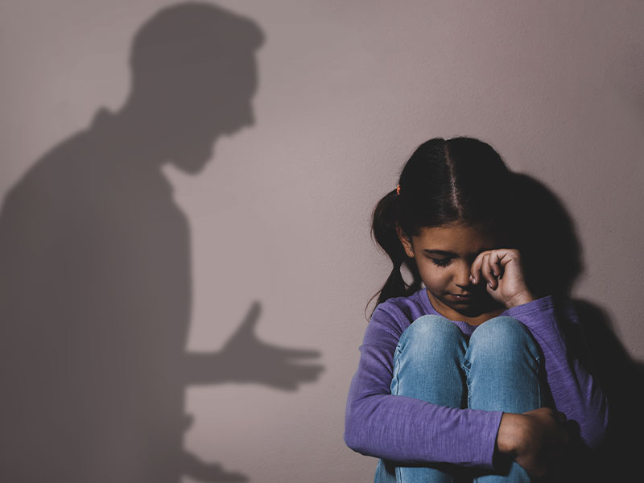
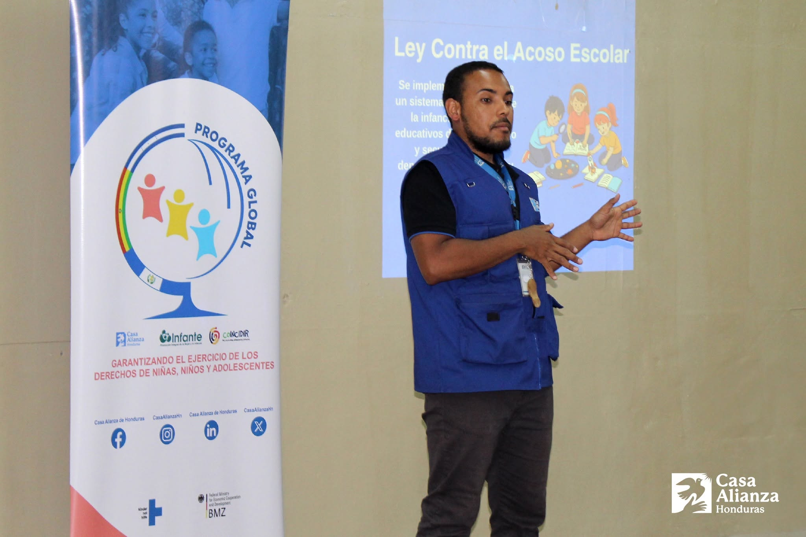
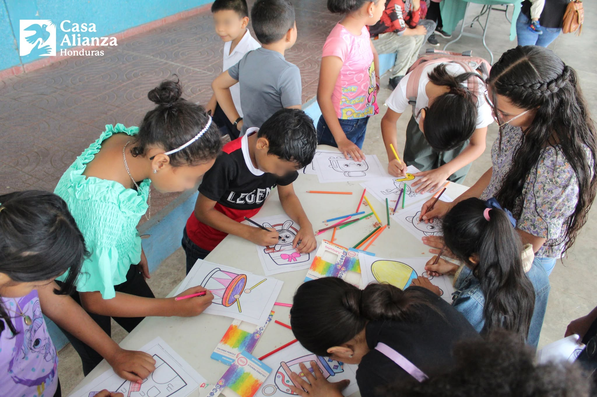

La importancia de proteger los derechos de la niñez
Todos los niños y adolescentes tienen derecho a crecer en ambientes seguros, recibir educación y desarrollarse libres de violencia.
Leer más
Todos los niños y adolescentes tienen derecho a crecer en ambientes seguros, recibir educación y desarrollarse libres de violencia.
Leer más
La prevención requiere educación, acompañamiento familiar y comunidades comprometidas con la protección infantil.
Leer más
Fortalecer los vínculos familiares permite crear nuevas oportunidades para jóvenes en situación vulnerable.
Leer más
El tiempo y las habilidades de los voluntarios ayudan a fortalecer programas comunitarios.
Leer más
Pequeñas acciones pueden generar grandes cambios en la vida de una persona.
Leer másNo se encontraron artículos.
Informar también es una forma de ayudar.
Participar